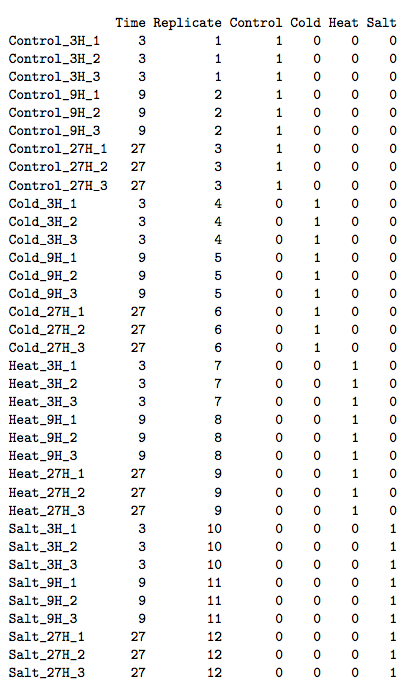

Periodically expressed genes in a single time course microarray experiment can be found using either the Fisher's G test or independent component analysis (ICA). If your data includes multiple time series for different experimental conditions (e.g. one for control samples and another one for treated ones) use maSigPro. For the Fisher's test and maSigPro, genes that have the corrected p-value less than the specified threshold are returned. For ICA, genes that are within the specified standard deviation from the mean, are returned.
In order to use maSigPro, you need to have a phenodata-matrix containing columns for the time variable, replicate variable and one for each experimental group. The time column should describe the time-point of the chip. Replicates column is an index column that indicates the replicated arrays: all arrays belonging to the same experimental condition must be given the same number. In addition to these two, the phenodata should include binary columns that give the assignment of arrays to experimental groups. There are as many binary columns as experimental groups and arrays take the value 1 or 0 whether they belong or not to that experimental group. The experiment-group columns should be side by side in the phenodata and you should mark the first (left-most) and the last (right-most) such column by using variables First/Last experimental column for maSigPro. For more help, please see the manual of maSigPro.
A list of genes expression and p-values (periodicity analysis) or a list of genes with expression values and their cluster membership (ICA). For ICA, a plot of genes in the clusters is also generated.
Please cite the following article, if you used maSigPro package:
Conesa,A. (2006). maSigPro: a method to identify significantly differential expression profiles in time-course microarray experiments. Bioinformatics, Vol 22, No 9, 1096-1102.